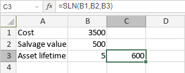

SLN funkcija
SLN funkcija je jedna od finansijskih funkcija. Koristi se za izračunavanje amortizacije sredstva za jedan obračunski period pomoću metode linearne amortizacije.
Sintaksa
SLN(cost, salvage, life)
SLN funkcija ima sledeće argumente:
| Argument | Opis |
|---|---|
| cost | Nabavna cena sredstva. |
| salvage | Ostatak vrednosti sredstva na kraju njegovog životnog veka. |
| life | Ukupan broj perioda u životnom veku sredstva. |
Napomene
Kako primeniti SLN funkciju.
Primeri
Slika ispod prikazuje rezultat koji vraća SLN funkcija.
